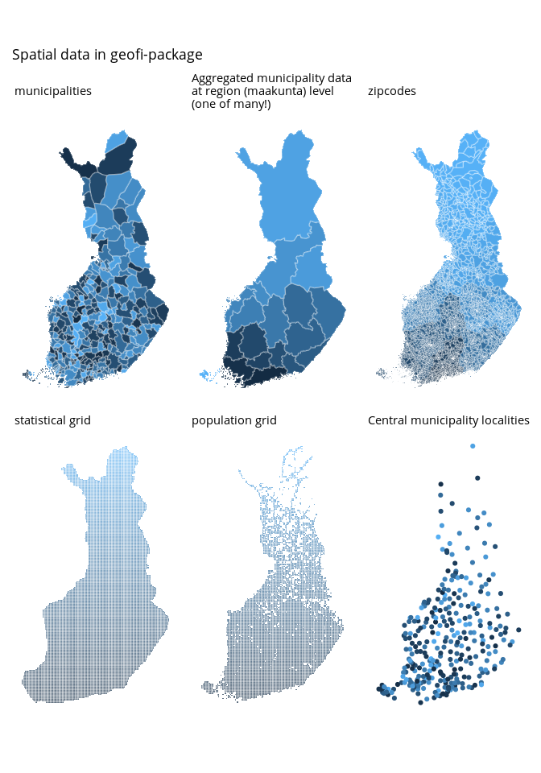

Access Finnish Geospatial Data.
Installation and use
# install from CRAN
install.packages("geofi")
# Install development version from GitHub
remotes::install_github("ropengov/geofi")With geofi-package you can download geospatial data on municipalities, zipcodes and population and statistical grids from Statistics Finland WFS-api. In addition, you have on-board municipality keys for aggregating municipality-level data into higher level regional distributions based Statistics Finland classification API.
Below are few examples of the data you can access using geofi. Please have a closer look at the vignettes for more comprehensive use cases.
library(geofi)
d1 <- get_municipalities(year = 2020)
d2 <- get_zipcodes(year = 2020)
d3 <- get_statistical_grid(resolution = 5)
d4 <- get_population_grid(resolution = 5)
library(ggplot2)
library(dplyr)
theme_set(
theme_minimal(base_family = "Arial") +
theme(legend.position= "none",
axis.text = element_blank(),
axis.title = element_blank(),
panel.grid = element_blank()
)
)
p1 <- ggplot(d1, aes(fill = kunta)) + geom_sf(colour = alpha("white", 1/3)) + labs(subtitle = "municipalities")
p2 <- ggplot(d1 %>% count(maakunta_code), aes(fill = maakunta_code)) + geom_sf(colour = alpha("white", 1/3)) + labs(subtitle = "Aggregated municipality data \nat region (maakunta) level \n(one of many!)")
p3 <- ggplot(d2, aes(fill = as.integer(posti_alue))) + geom_sf(colour = alpha("white", 1/3)) + labs(subtitle = "zipcodes")
p4 <- ggplot(d3, aes(fill = nro)) + geom_sf(colour = alpha("white", 1/3)) + labs(subtitle = "statistical grid")
p5 <- ggplot(d4, aes(fill = id_nro)) + geom_sf(colour = alpha("white", 1/3)) + labs(subtitle = "population grid")
p6 <- ggplot(municipality_central_localities, aes(color = as.integer(kuntatunnus))) + geom_sf() + labs(subtitle = "Central municipality localities")
library(patchwork)
wrap_plots(list(p1,p2,p3,p4,p5,p6), ncol = 3) +
patchwork::plot_annotation(title = "Spatial data in geofi-package")
Contribute
Contributions are very welcome:
- Use issue tracker for feedback and bug reports.
- Send pull requests
- Star us on the Github page
- Join the discussion in Gitter
Acknowledgements
Kindly cite this work as follows: Markus Kainu, Joona Lehtomäki, Juuso Parkkinen, Jani Miettinen, Pyry Kantanen, Leo Lahti Retrieval and analysis of open geospatial data from Finland with the geofi R package. R package version 1.0.200001. URL: https://ropengov.github.io/geofi/
We are grateful to all contributors. This project is part of rOpenGov.